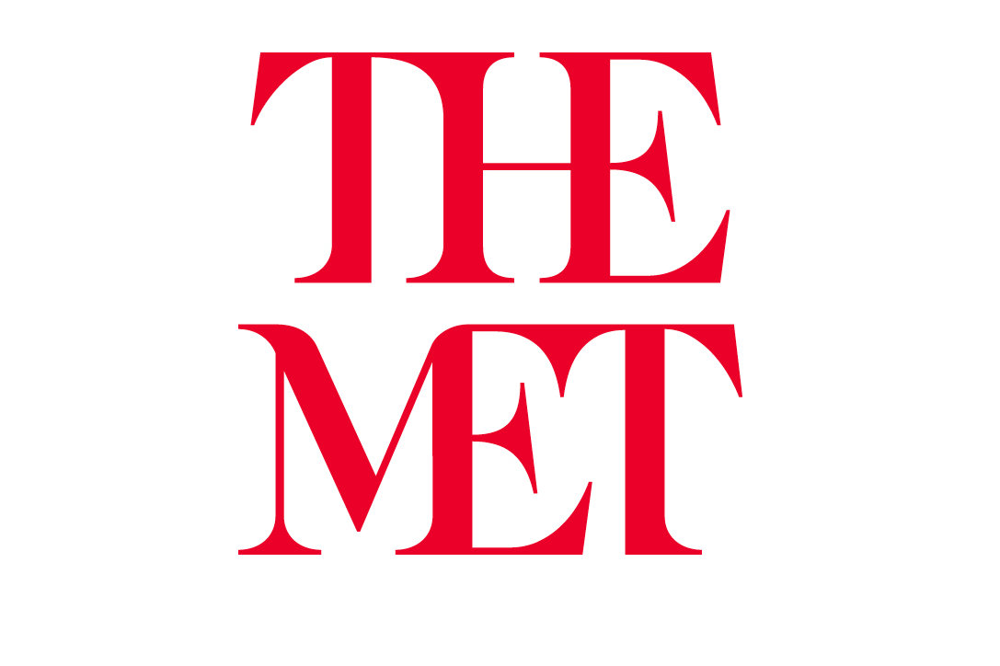
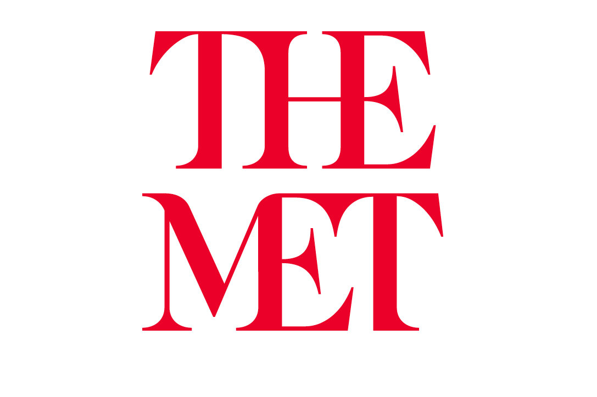

• https://www.eturia.ro/japonia/atractii
• https://ro.wikipedia.org/wiki/Japonia
• https://ro.wikipedia.org/wiki/Economia_Japoniei
• https://www.economica.net/clasamentul-mondial-al-producatorilor-de-masini-unde-sta-romania_509634.html
• https://ro.wikipedia.org/wiki/Cultura_japonez%C4%83
• https://ro.wikipedia.org/wiki/Perioada_J%C5%8Dmon
• https://ro.wikipedia.org/wiki/Perioada_Yayoi
• https://en.wikipedia.org/wiki/Haniwa
• https://ro.eferrit.com/perioada-kamakura/
• https://ro.wikipedia.org/wiki/Istoria_Japoniei
• https://www.metmuseum.org/art/collection/search/53624
• https://en.wikipedia.org/wiki/File:Jomon_Vessel_with_Flame-like_Ornamentation,_attributed_provenance_Umataka,_Nagaoka-shi,_Niigata,_Jomon_period,_3000-2000_BC_-_Tokyo_National_Museum_-_DSC05620.JPG
• https://ro.wikipedia.org/wiki/Sportul_%C3%AEn_Japonia
• https://ro.wikipedia.org/wiki/Judo
• https://ro.wikipedia.org/wiki/Kend%C5%8D
• https://ro.wikipedia.org/wiki/Karate
• https://ro.frwiki.wiki/wiki/Sport_japonais
• https://ro.frwiki.wiki/wiki/Kenjutsu
• https://ro.frwiki.wiki/wiki/Ju-jitsu
• https://ro.wikipedia.org/wiki/Aikid%C5%8D
• https://en.wikipedia.org/wiki/File:Shihonage.jpg
• https://unsplash.com/
• https://www.localguidesconnect.com/t5/General-Discussion/Japan-My-Custom-Travelling-Mega-Map/td-p/2166528
{kind=link}
{kind=link}